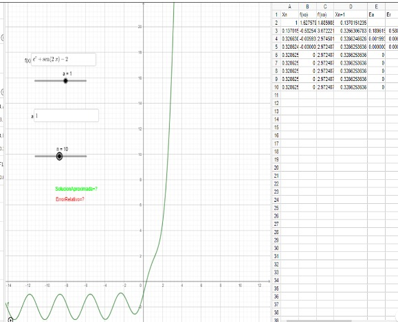

Métodos Numéricos
El método de Newton-Raphson, también conocido como método de Newton, es un algoritmo numérico utilizado para encontrar aproximaciones a las raíces de una función f(x). Este método es conocido por su rapidez de convergencia cuando se inicia cerca de la raíz deseada. Aquí están los pasos básicos del método de Newton-Raphson:
1. Elije un punto inicial x0 en el dominio de la funciónf(x). Este punto inicial debe estar lo más cerca posible de la raíz que se desea encontrar.
2.Calcula el valor de la función f(x0) y su derivadaf(x0) en el punto x0.
3.Utiliza la fórmula de Newton-Raphson para obtener una nueva aproximación x1de la raíz:
x1 = x0 - f(x0) / f'(x0)
4.Evalúa la función f(x) en x1 para obtener f(x1).
5.Determina si f(x1) es lo suficientemente cercano a cero (generalmente, se utiliza un criterio de convergencia, como f(x1)< ϵ , donde es una pequeña tolerancia). Si f(x1) es lo suficientemente cercano a cero, entonces has encontrado una aproximación aceptable de la raíz y puedes detener el proceso. Si f(x1) no es lo suficientemente cercano a cero, continúa con el siguiente paso.
6.Reemplaza x0 por x1 y repite los pasos 2-5 hasta que obtengas una aproximación aceptable de la raíz o hasta que se cumpla el criterio de convergencia.
"Es inapropiada o si la función tiene singularidades o puntos de inflexión cerca de la raíz deseada. Además, es necesario calcular la derivada de la función, lo que puede ser complicado en algunos casos. En tales situaciones, se pueden usar métodos alternativos como el método de la secante o el método de la falsa posición."
# Importar todas las funciones de la biblioteca math
from math import *
# Definición de la función f(x)
def f(x):
func = e**x + sin(2*x) - 2
return func
# Definición de la función df(x)
def df(x):
return 6*x + cos(x) - e**(x)
# Implementación del Método de Newton-Raphson
def NewtonRaphson(x0, tol, n):
for k in range(n):
x1 = x0 - f(x0) / df(x0)
# Calcular el error relativo y verificar si es menor que la tolerancia
error_relativo = abs(((x1 - x0) / x1) * 100)
if error_relativo < tol:
print('x', k+1, '=', x1, end=' ')
print('es una buena aproximación a la raíz')
return
x0 = x1
print('x', k+1, '=', x1)
# Llamada al MétodoNewtonRaphson con valor inicial 1, tolerancia 0.0000001 y máximo 10 iteraciones
NewtonRaphson(1, 0.0000001, 10)
x 1 = 0.5741573691441746 x 2 = 0.3000566599403646 x 3 = 0.3607575412814002 x 4 = 0.3037633560217483 x 5 = 0.3559581532099333 x 6 = 0.30683451789448 x 7 = 0.35213391896934454 x 8 = 0.3094326755431815 x 9 = 0.3490032258442228 x 10 = 0.31166260188752437Graficación
